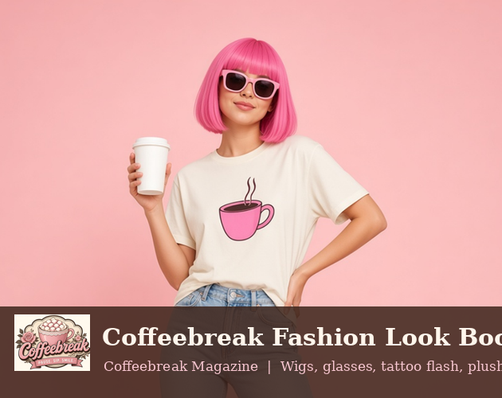
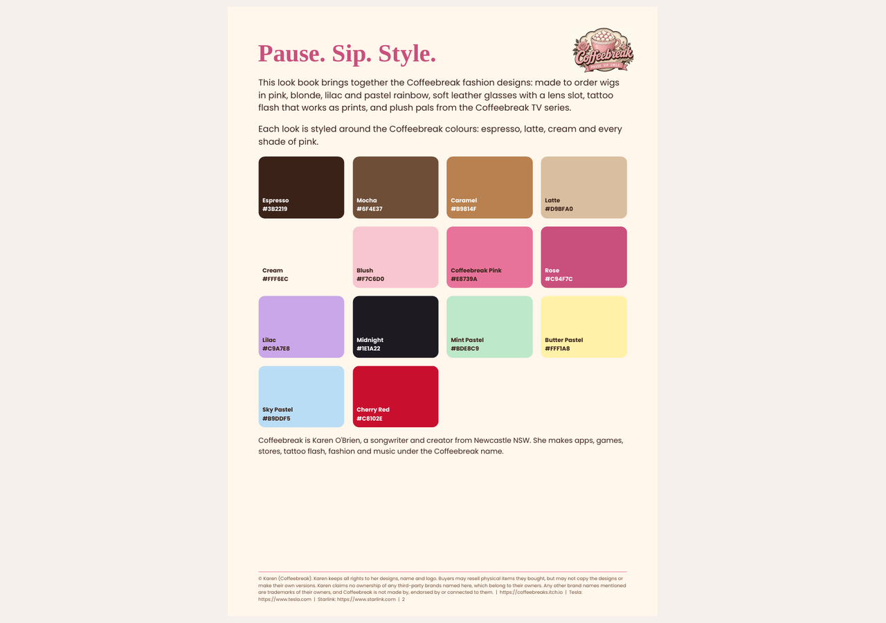
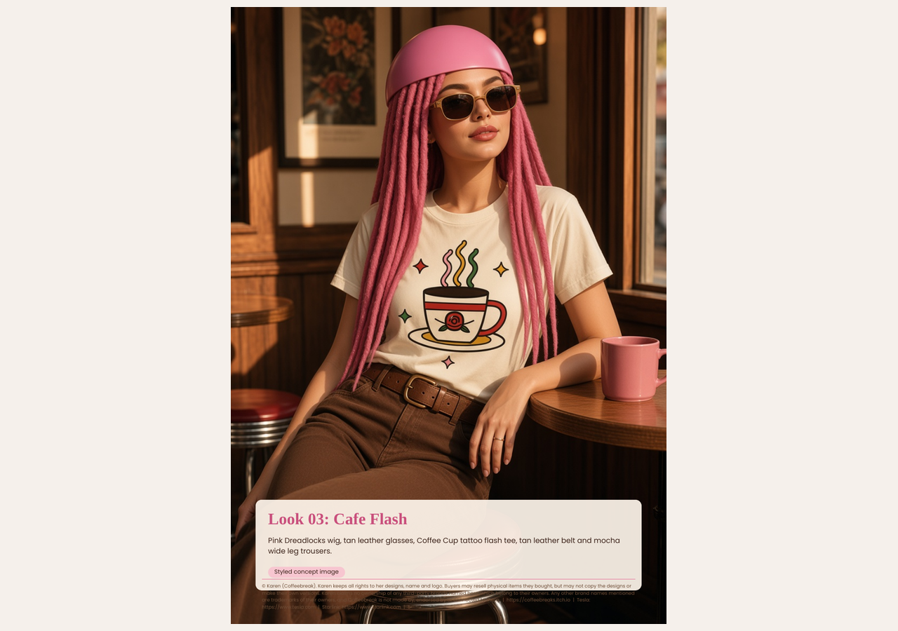
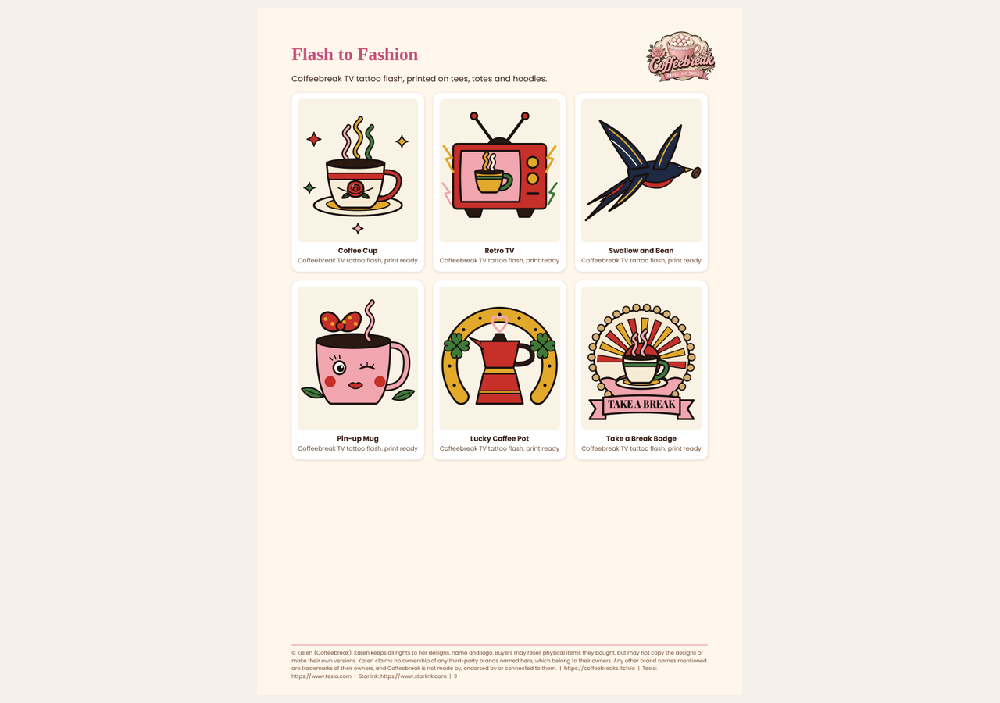

Price: $5 USD
Pay by PayID (Teachers Mutual Bank): darkokaz@gmx.com
After paying, email darkokaz@gmx.com with your name and the item, and you will be sent the full download. Pay before you play.
Pay by PayID (Teachers Mutual Bank): darkokaz@gmx.com
After paying, email darkokaz@gmx.com with your name and the item, and you will be sent the full download. Pay before you play.
Coffeebreak Magazine, Fashion Look Book issue. Pause. Sip. Style. This 13-page A4 issue brings together Karen's Coffeebreak fashion designs, styled around the Coffeebreak colours of espresso, latte, cream and every shade of pink. Inside this issue: - The Coffeebreak colour palette with hex codes - Styled looks with made-to-order wigs in pink, blonde, lilac and pastel rainbow - Soft leather glasses with a lens slot - Tattoo flash that works as prints and tees - Plush pals from the Coffeebreak TV series Format: one PDF, 13 A4 pages, ready to read on screen or print. Look images marked as styled concept images are illustrations, not photos of real customers or final products. About Coffeebreak: Coffeebreak is Karen O'Brien, a songwriter and creator from Newcastle NSW. She makes apps, games, stores, tattoo flash, fashion and music under the Coffeebreak name. More at https://coffeebreaks.itch.io Rights: © Karen (Coffeebreak). Karen keeps all rights to her designs, name and logo. Buyers may resell physical items they bought, but may not copy the designs or make their own versions. Karen claims no ownership of any third-party brands named here, which belong to their owners. Any other brand names mentioned are trademarks of their owners, and Coffeebreak is not made by, endorsed by or connected to them. This magazine is for personal use. Please do not resell or share the file. Price: USD 5.
Preview


